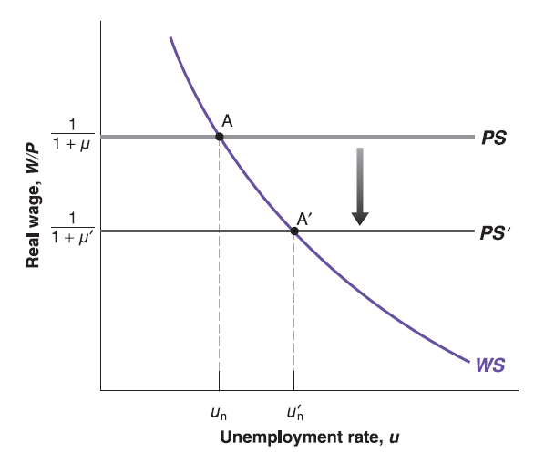

Lecture 10: Labor Market (continued)
Mingze Huang
2021-07-27
Labor Market Equilibrium
The equilibrium solution is just on the intersection point of two curves.

The equilibrium unemployment rate (\(u_{n}\)) is so called natural rate of unemployment.
An Increase in Unemployment Benefits
An increase in unemployment benefits can be represented by an increase in \(z\), which appears in wage-setting relation: \(\frac{W}{P}=F(u, z)\).
since the higher \(z\), the higher real wage \(\frac{W}{P}\). For any given unemployment rate \(u\), workers require higher real wage \(\frac{W}{P}\). The WS curve shifts up.

An Increase in Unemployment Benefits
Put the PS curve on, the equilibrium real wage level \(\frac{W}{P}\equiv\frac{1}{1+\mu}\) has no change since no change on \(\mu\).
But the equilibrium unemployment rate (natural rate of unemployment \(u_{n}\)) will be higher.
The intuition is that: given higher unemployment benefit (higher \(z\)), for any real wage level \(\frac{W}{P}\), unemployment always to be less painful, so that more workers prefer to be unemployed, equilibrium unemployment rate \(u_{n}\) goes higher.
Question 1: How will the equilibrium shift if workers unionize to bargain for a higher real wage level?
Question 2: How if low-wage jobs are replaced by AI?
A Less Stringent Enforcement of Antitrust Laws
U.S. Antitrust Laws T-Mobile/Sprint Merger
Less stringent enforcement of antitrust law leads to greater market power of firms, higher economic profit, so that higher mark-up \(\mu\) will be added on the top of cost.
Only price-setting relation \(\frac{W}{P}=\frac{1}{1+\mu}\) includes \(\mu\), The higher the mark-up \(\mu\), the lower the real wage \(\frac{W}{P}\equiv\frac{1}{1+\mu}\) for any unemployment rate \(u\). So that PS curve shift down.

A Less Stringent Enforcement of Antitrust Laws
Put the WS curve on. Since real wage \(\frac{W}{P}\) goes down.
Through the WS relation \(\frac{W}{P}=F(u, z)\), the equilibrium unemployment rate (natural rate of unemployment \(u_{n}\)) goes up.
The intuition is that:
Firms with higher market power can earn more economic profit (e.g. add higher mark-up \(\mu\) on the top of cost when they sell goods). That means they offer lower real wage \(\frac{W}{P}\) to their workers.
Lower real wages \(\frac{W}{P}\) make more workers prefer to be unemployed, equilibrium unemployment rate \(u_{n}\) goes higher.
Question: How if Amazon is split into several independent entities?
Jeff Bezos’s Thanks vs. Refund